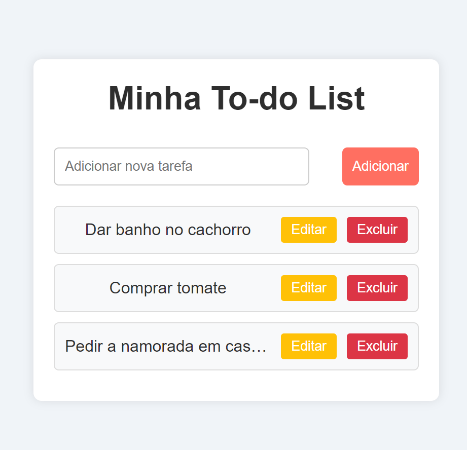

Sou um programador sempre buscando aprender mais e com o desejo de criar soluções que façam a diferença.
Faço faculdade de Desenvolvimento de Sistemas para Internet (DSI) no Instituto Federal de Educação, Ciência e Tecnologia de Mato Grosso - Campus Octayde. Comecei a faculdade com o intuito de trabalhar e viver de programação. Conheci a programação no começo da pandemia (2020), desde então venho sonhado com a possibilidade de trabalhar e viver com isso. Estou tentando aprender cada dia mais sobre o universo da programação. Comecei com HTML, CSS e JavaScript no inicio do ano de 2024, desde então aprendi sobre as linguagens de Python e C, e sobre os frameworks de React e NEXT.
Ensino médio
2018-2020
Colégio da Policia Militar Tiradentes
Ensino Superior
2024-Atualmente
IFMT - Campus Octayde
Uma aplicação simples onde o usuário pode adicionar, editar e excluir tarefas. Link para acesso.
Um jogo simples onde o usuário vira cartas para tentar combinar pares.
Uma calculadora simples que realiza operações básicas (soma, subtração, multiplicação, divisão).
E-mail: luanhenriquehdia@gmail.com
GitHub: Meu GitHub
Linkedin: Linkedin